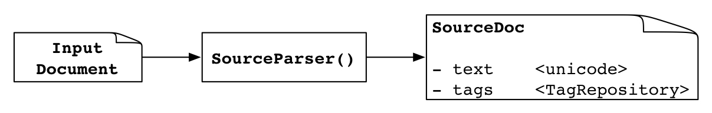
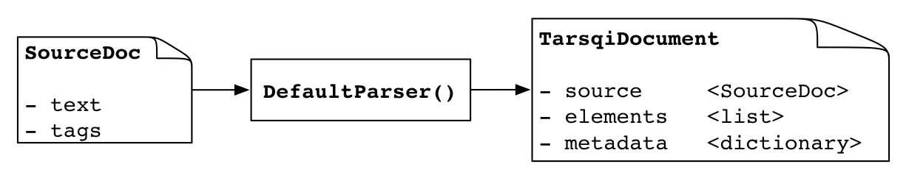
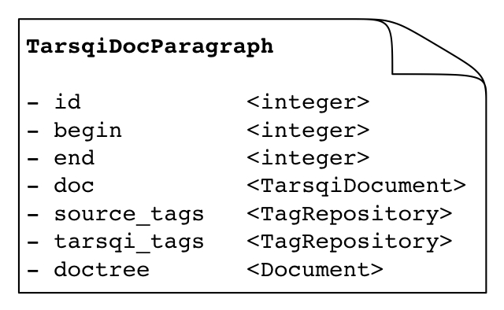

An input document is first processed by the SourceParser() in docmodel/source_parser.py.
 The result is an instance of SourceDoc in which the source and tags are split. The value of
source is a read-only unicode string, which is created using the default
settings of the Expat parser. The tags variable contains a repository of the
tags in the input document. This repository is intended to be read-only, TTK processing
will not add to this repository, rather, it will add tags to another repository (or
repositories). A SourceDoc instance has a few more instance variables of
interest:
PROBLEM: later processing stages replace unicode strings with strings, need to find
where this happens. This does not happen for the value of source but for the
strings inside of some other component, not sure which one, also not sure whether this is
actually a problem or something that can be ignored.
The code in docmodel/parsers.py parses the overall structure of the document. There are going to be parsers for all data types and genres that the toolkit needs to deal with. It is not clear yet how exactly this will be done since data types and genres can be orthogonal. The example here focuses on the simple case of the default parser.
The DefaultParser() takes a SourceDoc and creates an instance of TarsqiDocument, which
contains the read-only SourceDoc. The elements variable contains a list of
instances of TarsqiDocElement or one of its subclasses. For the default parser, this list
has only one element, a TarsqiDocParagraph. The metadata variable contains a
dictionary of meta data. With the default parser, the only element added is 'dct', the
document creation time, which is set to the present day. The xmldoc variable
will at some point be deprecated, but is kept around because most modules use it as an
interface. For the default parser, xmldoc contains the XmlDocument for the
single Tarsqi paragraph.
Document structure is now implemented as a flat list with, at this point, only one kind of element, instances of TarsqiDocParagraph. In the future, this will also have other elements like TarsqiSectionHeader.
A TarsqiDocParagraph has seven instance variables: id is a unique
identifier, begin and end contain the begin and end offsets in
the source text, doc is the TarsqiDocument that the paragraph is embedded in
(which gives access to the source text, source_tags is a TagRepository with
tags from the source, containing only those tags that either fully contain the paragraph
or are fully contained in it, tarsqi_tags is a TagRepository for added tags,
and doctree contains the Document for the paragraph. The Tag instances in the
tag repositories have offsets referring to the source text, that is, the unicode string
in tarsqidoc.source.text, where tarsqidoc is an instance of
TarsqiDocument.
Preprocessing is the same no matter what the genre or the document type. All TarsqiDocElements in the elements variable of the TarsqiDocument are processed, here shown for the TarsqiDocument that is created by the DefaultParser.

The unicode string in the text instance variable from the single TarsqiDocParagraph is sent through the preprocessing chain. The result of tokenizing, tagging and chunking is a shallow parse, a list of sentences where each sentence contains lexical items, noun chunks or verb chunks. Chunks contain lexical items only, no embedded chunks.
Note that the tokenizer works on substrings of the document (those embedded in the individual elements) and assigns offsets relative to those substrings. After tokenization, these offsets are adjusted and made relatie to the start of the document.
The export function takes this structure and exports tags to the
TagRepository in tarsqi_tags, using unique identifiers for lexical items
(lid), sentences (sid) and noun groups and verb groups (who share the cid identifier). The
export code generates identifiers for tokens, chunks and sentences that are unique to at
least the document and possibly even across documents if an entire directory is parsed. It
also creates an instance of Document and puts it in the doctree
variable. (NOTE: this is not done yet as of 10/31/2011).
Currently, BTime works the same on all TarsqiDocElements. It is given a list of list of unicode strings, that is, a list of sentences. It returns a list of tuples where each tuple includes the positions in the input list that were recognized as times and a timex tag, which contains. amingst other things, the normalized value.
All Tarsqi tags added by the system have identifiers that are unique to the document and the tag type. The identifiers consist of a tag-specific prefix and an integer. The prefixes and the tags they go with are listed in the table below.
| l | <lex> | The lexical tokens from the base segmentation. Refer to character offsets. |
| c | <ng>, <vg> | Chunks. Refer to character offsets and lex ids. |
| s | <s> | Sentence boundaries. Refer to character offsets and lex ids. |
| t | <timex3> | BTime timex tags. |
| e | <event> | Evita event tags, notice the absence of the depricated makeinstance tag. |
| al | <alink> | The three relation tags. These can only refer to event ids or timex ids. |
| sl | <slink> | |
| tl | <tlink> |
Tarsqi tags refer to character offsets in the primary data or to identifiers of other Tarsqi tags, some tags refer to both. For these, the toolkit uses the LAF attibutes anchors and targets. With the naming scheme above, the content of the target attribute, which refers to a range, is always uniquely defined.
Tags that were in the source document are not expected to have ids, nor are they added.